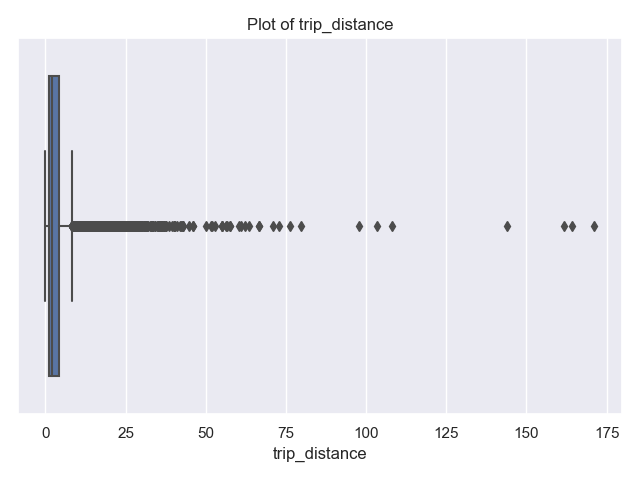
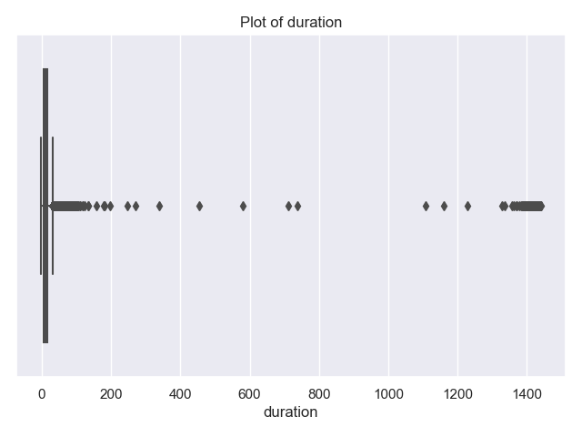
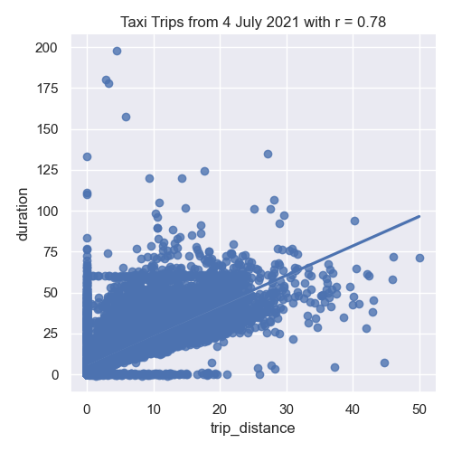
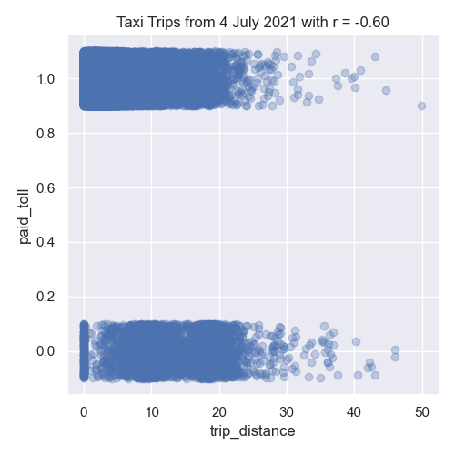
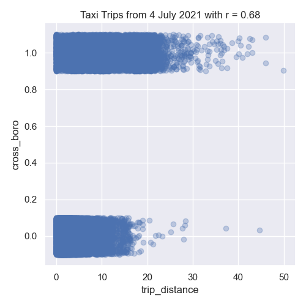
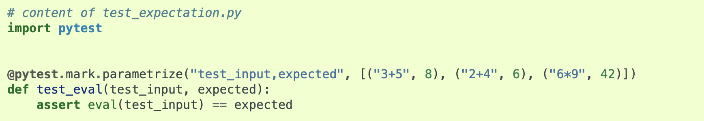

Program 4: Taxi Classifiers
CSci 39542: Introduction to Data Science
Department of Computer Science
Hunter College, City University of New York
Spring 2022
Classwork Quizzes Homework Project
Program Description
Program 4: Taxi Classifiers. Due noon, Friday, 27 October.
This program uses two datasets from NYC Open Data:
Learning Objective: to train and validate models, given quantitative and qualitative data, as well as assessing model quality.
Available Libraries: pandas, datetime, pickle, pytest, sklearn.ensemble, sklearn.model_selection, sklearn.metrics, sklearn.svm, and core Python 3.6+.
(Note if you use our annonations, you should also import Union.)
Data Sources: 2021 Yellow Taxi Trip Data and NYC Taxi Zones from OpenData NYC.
Sample Datasets: taxi_new_years_day_2021.csv,
taxi_4July2021.csv,
taxi_jfk_june2021.csv, and
taxi_zones.csv.
This program is tailored to the NYC OpenData Yellow Taxi Trip Data and follows standard strategy for data cleaning and model building:
To identify which trips are most likely to cross between boroughs, this program will focus on building several classifiers on both the categorical and numerical features of our dataset.

NYC OpenData Yellow Taxi Trip Data
tpep_pickup_datetime and pickup location PULocationID.
Create a practice dataset from your birthday or favorite day in 2021 to use to test your code.
Preparing Data
Once you have downloaded some test data sets to your device, the next thing to do is format the data to be usable for analysis. We will need to do some cleaning, as well as imputing missing values and encoding categorical values. Once we have the cleaned the data, we can split it into training and testing data sets. Add the following functions to your Python program:
-
import_data(file_name) -> pd.DataFrame:This function takes as one input parameter:-
file_name: the name of a CSV file containing 2021 Yellow Taxi Trip Data from OpenData NYC.
Any rows where theVendorID,tpep_pickup_datetime,tpep_dropoff_datetime,passenger_count,trip_distance,PULocationID,DOLocationID,fare_amount,tip_amount,tolls_amount,total_amounttotal_amountis 0 or negative ortrip_distanceis larger than 200 are dropped. The resulting DataFrame is returned. -
-
add_tip_time_features(df) -> pd.DataFrame:This function takes one input:-
df: a DataFrame containing 2021 Yellow Taxi Trip Data from OpenData NYC.
percent_tip: which is100*tip_amount/(total_amount-tip_amount)duration: the time the trip took in minutes.dayofweek: the day of the week that the trip started, represented as 0 for Monday, 1 for Tuesday, ... 6 for Sunday.
Hint: See Chapter 9.4 for transforming strings todatetimeobjects. -
-
impute_numeric_cols(df, x_num_cols) -> pd.DataFrame:This function takes two inputs:-
df: a DataFrame containing Yellow Taxi Trip Data from OpenData NYC. -
x_num_cols: a list of numerical columns indf.
x_num_colsare replaced with the median of the column.
Returns the resulting DataFrame. -
-
add_boro(df, file_name) -> pd.DataFrame:This function takes as two input parameters:-
df: a DataFrame containing 2021 Yellow Taxi Trip Data from OpenData NYC. -
file_name: the name of a CSV file containing NYC Taxi Zones from OpenData NYC.
file_name, to add pick up and drop off boroughs todf. In particular, adds two new columns to thedf:-
PU_boroughthat contain the borough corresponding to the pick up taxi zone ID (stored inPULocationID), and -
DO_boroughthat contain the borough corresponding to the drop off taxi zone (stored inDOLocationID)
dfwith these two additional columns (PU_boroughandDO_borough). -
-
add_flags(df) -> pd.DataFrame:This function takes one input parameter:-
df: a DataFrame containing 2021 Yellow Taxi Trip Data from OpenData NYC to whichadd_boro()has been applied.
-
paid_tollwhich is 1 if a toll was paid on the trip and 0 in no tolls were paid. -
cross_borowhich is 1 if the trip started and ended in different borough, and 0 if the trip started and ended in the same borough.
dfwith these two additional columns (paid_tollandcross_boro). -
-
encode_categorical_col(col,prefix) -> pd.DataFrame:This function takes two input parameters:-
col: a column of categorical data. -
prefix: a prefix to use for the labels of the resulting columns.
prefixparameter has the value 'PU_' (and set the separators to be the empty string:prefix_sep=''), then the resulting columns would be labeled: 'PU_Bronx', 'PU_Brooklyn', 'PU_Manhattan', 'PU_Queens', and 'PU_Staten Island'. The last one alphabetically is dropped (in this example, 'PU_Staten Island') and the DataFrame restricted to the first k-1 columns is returned. Note: we presented several different ways to categorically encode nomial data in Lecture 14. The book details an approach using sklearn in Chapter 15, and you may find Panda's get_dummies useful. -
-
split_test_train(df, xes_col_names, y_col_name, test_size=0.25, random_state=2023) -> Union[pd.DataFrame, pd.DataFrame, pd.Series(), pd.Series()]:This function takes 5 input parameters:-
df: a DataFrame containing 2021 Yellow Taxi Trip Data from OpenData NYC to whichadd_boro()has been applied. -
y_col_name: the name of the column of the dependent variable. -
xes_col_names: a list of columns that contain the independent variables. -
test_size: accepts a float between 0 and 1 and represents the proportion of the data set to use for training. This parameter has a default value of 0.25. -
random_state: Used as a seed to the randomization. This parameter has a default value of 2023.
x_train,x_test,y_train,y_test.
Hint: see the examples from Lecture 4 for a similar splitting of data into training and testing datasets. -
For example, let's start by setting up a DataFrame, with the file, taxi_4July2021.csv, add in the tip and time features, and imputing missing values for passenger_count:
df = import_data('taxi_4July2021.csv')
df = add_tip_time_features(df)
print('First lines of DataFrame with tip/time features:')
print(df.head()) VendorID tpep_pickup_datetime tpep_dropoff_datetime passenger_count trip_distance ... tolls_amount total_amount percent_tip duration dayofweek
0 1.0 07/04/2021 12:00:00 AM 07/04/2021 12:16:03 AM 2.0 3.50 ... 0.0 20.75 19.942197 963.0 6
1 NaN 07/04/2021 12:00:00 AM 07/04/2021 12:08:00 AM NaN 1.49 ... 0.0 16.30 13.986014 480.0 6
2 NaN 07/04/2021 12:00:00 AM 07/04/2021 12:09:00 AM NaN 1.66 ... 0.0 17.01 15.793057 540.0 6
3 NaN 07/04/2021 12:00:00 AM 07/04/2021 12:18:00 AM NaN 3.75 ... 0.0 24.65 21.428571 1080.0 6
4 NaN 07/04/2021 12:00:00 AM 07/04/2021 12:15:00 AM NaN 5.07 ... 0.0 32.50 0.000000 900.0 6
[5 rows x 14 columns]df = impute_numeric_cols(df,['passenger_count'])
df = add_boro(df,'taxi_zones.csv')
print('\nThe locations and new columns:')
print(f"{df[['passenger_count','PULocationID','PU_borough','DOLocationID','DO_borough']]}")which prints out the new columns:
The locations and new columns:
passenger_count PULocationID PU_borough DOLocationID DO_borough
0 2.0 170 Manhattan 238 Manhattan
1 1.0 107 Manhattan 246 Manhattan
2 1.0 113 Manhattan 186 Manhattan
3 1.0 137 Manhattan 256 Brooklyn
4 1.0 151 Manhattan 68 Manhattan
... ... ... ... ... ...
60286 1.0 186 Manhattan 68 Manhattan
60287 1.0 234 Manhattan 249 Manhattan
60288 1.0 90 Manhattan 230 Manhattan
60289 1.0 79 Manhattan 144 Manhattan
60290 1.0 186 Manhattan 229 Manhattan
We can add the indicators for if a toll was paid and if the trip started and ended in different boroughs:
df = add_flags(df)
print(df[['trip_distance','PU_borough','DO_borough','paid_toll','cross_boro']])
trip_distance PU_borough DO_borough paid_toll cross_boro
0 3.50 Manhattan Manhattan 1 0
1 1.49 Manhattan Manhattan 1 0
2 1.66 Manhattan Manhattan 1 0
3 3.75 Manhattan Brooklyn 1 1
4 5.07 Manhattan Manhattan 1 0
... ... ... ... ... ...
60282 0.60 Manhattan Manhattan 1 0
60283 1.43 Manhattan Manhattan 1 0
60284 1.57 Manhattan Manhattan 1 0
60285 0.89 Manhattan Manhattan 1 0
60286 2.09 Manhattan Manhattan 1 0Let's explore the data some:
import matplotlib.pyplot as plt
import seaborn as sns
sns.set_theme(color_codes=True)
sns.boxplot(data=df, x="trip_distance")
plt.title('Plot of trip_distance')
plt.tight_layout() #for nicer margins
plt.show()
sns.boxplot(data=df, x="duration")
plt.title('Plot of duration')
plt.tight_layout() #for nicer margins
plt.show()The resulting plots are:

and show that most trips are short in distance and time. There's a some long trips and very long durations. The latter are likely measurement errors (e.g. mistakenly not ending the trip on the trip recorder), since it's unlikely that there are many trips of 240 minutes (4 hours) or more.
Let's look at the trips of over 4 hours and also those of more than 100 miles:
print(df[['trip_distance','duration']])
print('Trips that are longer than 4 hours:')
print(df[ df['duration'] >60*4][["tpep_pickup_datetime","tpep_dropoff_datetime","trip_distance","duration"]])
print(f"Max trip for long trips is: {df[ df['duration'] >60*4]['trip_distance'].max()}")Trips that are longer than 4 hours:
tpep_pickup_datetime tpep_dropoff_datetime trip_distance duration
90 07/04/2021 12:01:43 AM 07/04/2021 11:27:14 PM 2.40 1405.516667
524 07/04/2021 12:10:51 AM 07/04/2021 11:42:47 PM 3.87 1411.933333
1240 07/04/2021 12:26:42 AM 07/04/2021 10:34:47 PM 1.85 1328.083333
1560 07/04/2021 12:34:18 AM 07/05/2021 12:32:39 AM 1.99 1438.350000
2341 07/04/2021 12:52:52 AM 07/04/2021 08:27:48 AM 19.31 454.933333
... ... ... ... ...
58554 07/04/2021 11:18:59 PM 07/05/2021 11:15:07 PM 3.54 1436.133333
59505 07/04/2021 11:41:01 PM 07/05/2021 11:26:59 PM 3.18 1425.966667
59690 07/04/2021 11:45:17 PM 07/05/2021 10:34:01 PM 17.17 1368.733333
60154 07/04/2021 11:56:51 PM 07/05/2021 11:32:48 PM 1.17 1415.950000
60172 07/04/2021 11:57:05 PM 07/05/2021 10:34:14 PM 19.60 1357.150000
[157 rows x 4 columns]
Max trip for long trips is: 19.86The farthest traveled of the 157 trips that took more than 4 hours is just under 19.86. This seems much more likely an error in the recording device than actual trips. Let's look at the long trips:
print('Trips that are longer than 100 miles:')
print(df[ df['trip_distance'] >100][["tpep_pickup_datetime","tpep_dropoff_datetime","trip_distance","duration"]])tpep_pickup_datetime tpep_dropoff_datetime trip_distance duration
14080 07/04/2021 10:43:03 AM 07/04/2021 10:58:24 AM 108.2 15.350000
17162 07/04/2021 11:49:17 AM 07/04/2021 12:06:09 PM 103.3 16.866667
27029 07/04/2021 02:28:57 PM 07/04/2021 02:48:52 PM 171.1 19.916667
33158 07/04/2021 04:00:19 PM 07/04/2021 04:21:38 PM 161.6 21.316667
35624 07/04/2021 04:36:21 PM 07/04/2021 04:51:59 PM 144.0 15.633333
40783 07/04/2021 05:53:22 PM 07/04/2021 06:24:52 PM 164.2 31.500000To focus on trips that stay within the city, let's limit our data to trips that are less than 50 miles in distance, as well as less than 4 hours in duration. And, explore the data by making scatter plots of some of the features:
df = df[ df['duration'] < 60*4]
df = df[df['trip_distance'] < 50]
sns.lmplot(x="trip_distance", y="duration", data=df)
tot_r = df['trip_distance'].corr(df['duration'])
plt.title(f'Taxi Trips from 4 July 2021 with r = {tot_r:.2f}')
plt.tight_layout() #for nicer margins
plt.show()
sns.lmplot(x="trip_distance", y="paid_toll", data=df,fit_reg=False,y_jitter=0.1,
scatter_kws={'alpha': 0.3})
dist_r = df['trip_distance'].corr(df['paid_toll'])
plt.title(f'Taxi Trips from 4 July 2021 with r = {dist_r:.2f}')
plt.tight_layout() #for nicer margins
plt.show()
sns.lmplot(x="trip_distance", y="cross_boro", data=df,fit_reg=False,y_jitter=0.1,
scatter_kws={'alpha': 0.3})
dist_r = df['trip_distance'].corr(df['cross_boro'])
plt.title(f'Taxi Trips from 4 July 2021 with r = {dist_r:.2f}')
plt.tight_layout() #for nicer margins
plt.show()As discussed in Lecture 8 and Chapter 24, we added jitter to the y-values to better visualize the data since so much has similar values:
  
In our left image, the distance traveled and the duration of the trip are strongly correlated. The middle image show negative correlation between trip distance and paying tolls. While the right images shows the trip distance positively correlated with trips that start and end in different boroughs.
Next, let's encode the categorical columns for pick up and drop off boroughs so we can use them as inputs for our model.
df_pu = encode_categorical_col(df['PU_borough'],'PU_')
print(df_pu.head())
df_do = encode_categorical_col(df['DO_borough'],'DO_')
print(df_do.head())The first few lines of the resulting DataFrames:
PU_Bronx PU_Brooklyn PU_EWR PU_Manhattan PU_Queens
0 0 0 0 1 0
1 0 0 0 1 0
2 0 0 0 1 0
3 0 0 0 1 0
4 0 0 0 1 0
DO_Bronx DO_Brooklyn DO_EWR DO_Manhattan DO_Queens
0 0 0 0 1 0
1 0 0 0 1 0
2 0 0 0 1 0
3 0 1 0 0 0
4 0 0 0 1 0Let's combine all the DataFrames into one (using concat along column axis):
df_all = pd.concat( [df,df_pu,df_do], axis=1)
print(f'The combined DataFrame has columns: {df_all.columns}')
The combined DataFrame has the columns:
The combined DataFrame has columns:
Index(['VendorID', 'tpep_pickup_datetime', 'tpep_dropoff_datetime',
'passenger_count', 'trip_distance', 'PULocationID', 'DOLocationID',
'fare_amount', 'tip_amount', 'tolls_amount', 'total_amount',
'percent_tip', 'duration', 'dayofweek', 'PU_borough', 'DO_borough',
'paid_toll', 'cross_boro', 'PU_Bronx', 'PU_Brooklyn', 'PU_EWR',
'PU_Manhattan', 'PU_Queens', 'DO_Bronx', 'DO_Brooklyn', 'DO_EWR',
'DO_Manhattan', 'DO_Queens'],
dtype='object')'DO_EWR'.
We'll focus on the numeric columns, split our data into training and testing data sets:
x_col_names = ['passenger_count', 'trip_distance', 'RatecodeID', 'PULocationID',
'DOLocationID', 'payment_type', 'fare_amount', 'extra', 'mta_tax',
'tip_amount', 'tolls_amount', 'improvement_surcharge', 'total_amount',
'congestion_surcharge', 'percent_tip', 'duration', 'dayofweek',
'paid_toll', 'PU_Bronx', 'PU_Brooklyn', 'PU_Manhattan', 'PU_Queens',
'DO_Bronx', 'DO_Brooklyn', 'DO_EWR', 'DO_Manhattan', 'DO_Queens']
y_col_name = 'cross_boro'
x_train, x_test, y_train, y_test = split_test_train(df_all, x_col_names, y_col_name)
Building Classifers
In Lectures 8 & 9, we introduced models for classifying data. We will use three of those classifiers here: logistic regression, support vector machine classifier (SVC), and random forests. All are implemented in scikit-learn and we will
-
fit_logistic_regression(x_train, y_train,penalty=None,max_iter=1000,random_state=2023) -> object:This function takes five input parameter:-
x_train: the indepenent variable(s) for the analysis. -
y_train: the dependent variable for the analysis. -
penalty: the type of regularization applied. The default value for this parameter isNone. -
max_iter: number of iterations allowed when fitting model. The default value for this parameter is 1000. -
random_state: Used as a seed to the randomization. This parameter has a default value of 2023.
x_trainandy_traindata, using the logistic model from sklearn.linear_model. The model should use thesolver = 'saga'to allow all the options for regularization (calledpenaltyas the option to the model) be any of'elasticnet','l1','l2', and'none'). The parametermax_itershould also be used when fitting the model. The resulting model should be returned as bytestream, using pickle. -
-
fit_svc(x_train, y_train,kernel='none',max_iter=1000,random_state=2023) -> object:This function takes five input parameter:-
x_train: the indepenent variable(s) for the analysis. -
y_train: the dependent variable for the analysis. -
kernel: the type of kernel used. The default value for this parameter is 'rbf'. -
max_iter: number of iterations allowed when fitting model. The default value for this parameter is 1000. -
random_state: Used as a seed to the randomization. This parameter has a default value of 2023.
x_trainandy_traindata, using the logistic model from sklearn.svm. The model should use thekernelspeficied and can be any of the following'linear','poly','rbf', and'sigmoid'). The parametermax_itershould also be used when fitting the model. The resulting model should be returned as bytestream, using pickle. -
-
fit_random_forest(x_train, y_train,num_trees=100,random_state=2023) -> object:This function takes four input parameter:-
x_train: the indepenent variable(s) for the analysis. -
y_train: the dependent variable for the analysis. -
num_trees: the number of decision trees in the forest classifier. The default value for this parameter is 100. -
random_state: Used as a seed to the randomization. This parameter has a default value of 2023.
x_trainandy_traindata, using the logistic model from sklearn.ensemble. The parameternum_treesshould also be used when fitting the model as the number of estimators, or trees in the forest. The resulting model should be returned as bytestream, using pickle. -
We'll use these functions to build a list of models (as serialized objects) for later use. We'll try first just a single independent variable, trip_distance, and build a classifiers to predict when trips start in one borough and end in another (when cross_boro is 1). Since some classifiers expect data to be in standard units (introduced in lecture and Program 2), we first put the training sets in standard units and transform the testing sets to be in the same units:
from sklearn.preprocessing import StandardScaler
x_cols = ['trip_distance','dayofweek','paid_toll', 'PU_Bronx', 'PU_Brooklyn','PU_Manhattan', 'PU_Queens']
x_scaler = StandardScaler()
x_tr_std = x_scaler.fit_transform(x_train[x_cols])
x_te_std = x_scaler.transform(x_test[x_cols])
print(f'The means for the x_scaler is {x_scaler.mean_} and x_tr_std is {(np.mean(x_tr_std))}')
The means for our data are:
The means for the x_scaler is [3.76803337 6. 0.93331411 0.00672183 0.01936686 0.8738381
0.08807152] and x_tr_std is 3.485845347030431e-17For each type of classifier, we will set up a model for the different parameters available:
pkl_models = []
mod_names = []
for p in [None,'l1','l2']:
print(f'Fitting a logistic model with {p} regularization.')
mod_names.append(f'logistic regression with {p} regularization')
pkl_models.append(fit_logistic_regression(x_tr,y_tr,penalty=p))
for n_trees in [10,100,1000]:
print(f'Fitting a random forest model with {p} number of trees.')
mod_names.append(f'random forest with {p} number of trees')
pkl_models.append(fit_random_forest(x_tr,y_tr,num_trees=n_trees))
for kernel in ['linear', 'poly', 'rbf','sigmoid']:
print(f'Fitting a SVC with {p} kernel.')
mod_names.append(f'SVC with {p} kernel')
pkl_models.append(fit_svc(x_tr,y_tr,kernel=kernel),max_iter=50000)
Note that we increased the number of iterates for the SVM classifier, since the default of 1000 gave convergence warnings, but even at 50,000, the poly kernel gave convergence warnings:
Fitting a logistic model with None regularization.
Fitting a logistic model with l1 regularization.
Fitting a logistic model with l2 regularization.
Fitting a random forest model with 10 number of trees.
Fitting a random forest model with 100 number of trees.
Fitting a random forest model with 1000 number of trees.
Fitting a SVC with linear kernel.
Fitting a SVC with poly kernel.
/Users/stjohn/opt/anaconda3/lib/python3.8/site-packages/sklearn/svm/_base.py:299: ConvergenceWarning: Solver terminated early (max_iter=50000). Consider pre-processing your data with StandardScaler or MinMaxScaler.
warnings.warn(
Fitting a SVC with rbf kernel.
Fitting a SVC with sigmoid kernel.Evaluating Our Classifiers
We have build a list of multiple classifiers and now will evaluate how well each works on the training data as well as the data we saved for testing.
-
predict_using_trained_model(mod_pkl, x, y) -> Union[float, float]:This function takes three inputs:-
mod_pkl: a trained model for the data, stored in pickle format. -
x: an array or DataFrame of numeric columns with no null values. -
y: an array or DataFrame of numeric columns with no null values.
modonx) and the actual values (y). Note thatsklearn.metricscontains two functions that may be of use:mean_squared_errorandr2_score. -
-
best_fit(mod_list, name_list, x, y, verbose=False) -> Union[object, str]:This function takes five inputs:-
mod_list: a list of trained models for the data, each stored in pickle format. -
name_list: a list of trained models for the data, each stored in pickle format. -
x: an array or DataFrame of numeric columns with no null values. -
y: an array or DataFrame of numeric columns with no null values.verbose: whenTrue, prints out the MSE cost for each model tried (in format:f'MSE cost for model {mod_name} poly model: {error:.3f}'for eachmod_nameinname_list. It has a default value ofFalse.
mod_list, computes the r2 score between the values predicted by the model (modonx) and the actual values (y), and returns the pickled model and its name. -
Let's run the logistic models we build above:
print(f'For independent variables: {x_cols}:')
for mod,name in zip(mod_list[:3],name_list[:3]):
print(f'For model {name}:')
mse_tr, r2_tr = predict_using_trained_model(mod,x_tr_std,y_train)
print(f'\ttraining data: mean squared error = {mse_tr:8.8} and r2 = {r2_tr:4.4}.')
mse_val, r2_val = predict_using_trained_model(mod,x_te_std,y_test)
print(f'\ttesting data: mean squared error = {mse_val:8.8} and r2 = {r2_val:4.4}.')
For independent variables: ['trip_distance', 'dayofweek', 'paid_toll', 'PU_Bronx', 'PU_Brooklyn', 'PU_Manhattan', 'PU_Queens']:
For model logistic regression with None regularization:
training data: mean squared error = 0.070102269 and r2 = 0.5002.
testing data: mean squared error = 0.06801544 and r2 = 0.4981.
For model logistic regression with l1 regularization:
training data: mean squared error = 0.070124454 and r2 = 0.5.
testing data: mean squared error = 0.06801544 and r2 = 0.4981.
For model logistic regression with l2 regularization:
training data: mean squared error = 0.070124454 and r2 = 0.5.
testing data: mean squared error = 0.06801544 and r2 = 0.4981.All of the models do better with the training subset than the testing subset. Let's look at which model did best of all considered:
print(f'For independent variables: {x_cols}:')
for mod,name in zip(pkl_models[:3],mod_names[:3]):
print(f'For model {name}:')
mse_tr, r2_tr = predict_using_trained_model(mod,x_tr_std,y_train)
print(f'\ttraining data: mean squared error = {mse_tr:8.8} and r2 = {r2_tr:4.4}.')
mse_val, r2_val = predict_using_trained_model(mod,x_te_std,y_test)
print(f'\ttesting data: mean squared error = {mse_val:8.8} and r2 = {r2_val:4.4}.')
best_mod, best_name = best_fit(pkl_models,mod_names, x_te_std, y_test, verbose=True)
print(f'The best mode is {best_name}.')
verbose flag on, we can see the computations:
MSE cost for model logistic regression with l1 regularization poly model: 0.068
MSE cost for model logistic regression with l2 regularization poly model: 0.068
MSE cost for model random forest with 10 number of trees poly model: 0.076
MSE cost for model random forest with 100 number of trees poly model: 0.075
MSE cost for model random forest with 1000 number of trees poly model: 0.076
MSE cost for model SVC with linear kernel poly model: 0.070
MSE cost for model SVC with poly kernel poly model: 0.075
MSE cost for model SVC with rbf kernel poly model: 0.067
MSE cost for model SVC with sigmoid kernel poly model: 0.131
The best mode is SVC with rbf kernel.Test Suites
In Program 3 and Lecture 5, we introduced pytest. In addition to the assert statements used, we will also use parametrizations for this program. The basic format is:

The parametrize list allows you to specify the inputs and expected outputs for the function you are testing. You can define
-
test_impute_numeric_cols(test_df,test_cols,expected): This function takes three inputs, provided by the parametriziations:test_df: A DataFrame containing thetest_cols.test_cols: A list of columns for the DataFrametest_df.expected: A DataFrame containing the expected output for theinpute_numeric_cols(test_df,test_cols).
impute_numeric_cols()function. It assertTrueifimpute_numeric_cols()is correct andFalseotherwise. -
test_add_flags(test_df,expected): This function takes two inputs, provided by the parametriziations:test_df: A DataFrame containing the columns expected for theadd_flags()function.expected: A DataFrame containing the expected output for theadd_flags(test_df).
add_flags()function. It assertTrueifadd_flags()is correct andFalseotherwise.
Preceding each of these test functions, you should include @pytest.mark.parametrize list. For example, the first testing function should be of the format:
test_data = [ """TRIPLES OF DATA TO TEST GOES HERE""" ]
@pytest.mark.parametrize("test_df,test_cols,expected", test_data)
def test_impute_numeric_cols(test_df,test_cols,expected):
assert test_impute_numeric_cols(test_df,test_cols).equals(expected)
Hints:
- You can run pytest locally from the command line. To see only errors and results, use the disable-warnings flag:
pytest --disable-warnings p4.py - When comparing DataFrames, you may find the
equals()method helpful.